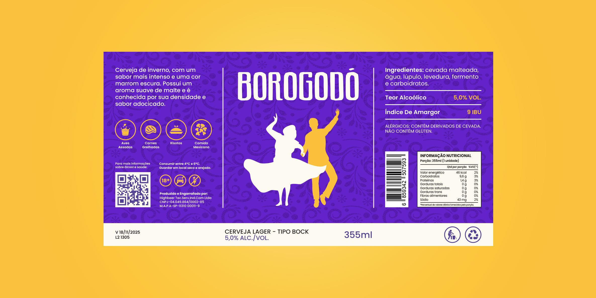
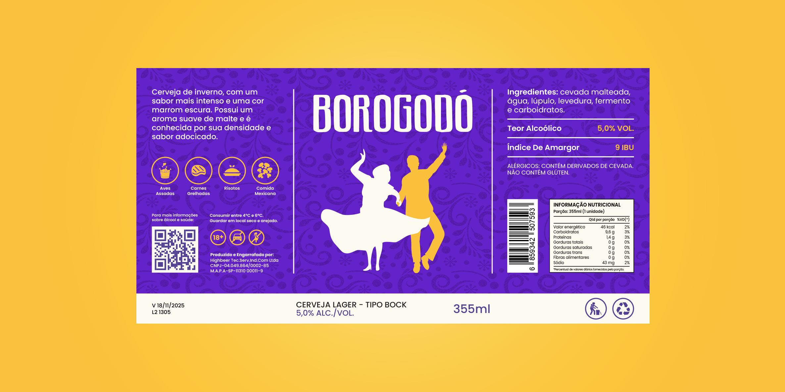
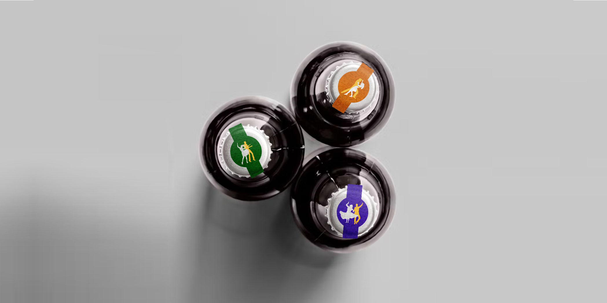

Cliente: Cervejaria Artesanal Borogodó
Ano: 2024
A BOROGODÓ é aquela cervejaria que se destaca. Sempre em busca de transmitir brasilidade nas suas cervejas, a empresa decidiu criar uma identidade visual viva e descontraída que se adapte melhor aos seus pontos de contato e converse melhor com seu público-alvo.

PANTONE 1235 C
RGB 250, 192, 61
CMYK 1, 28, 82, 0
HEX #FAC03D
RGB 253, 250, 241
CMYK 1, 2, 8, 0
HEX #FDFAF1

A BOROGODÓ está trazendo uma nova linha de cervejas artesanais da familia Lager. As primeiras cervejas selecionadas para essa linha são a Pilsen e a Bock, cervejas mais tradicionais e conhecidas mundialmente. Uma Fruitbeer com frutas brasileiras(maracujá e abacaxi) também se junta a nova linha. E é claro que as novas cervejas precisam de uma identidade visual que as destaquem!
 



